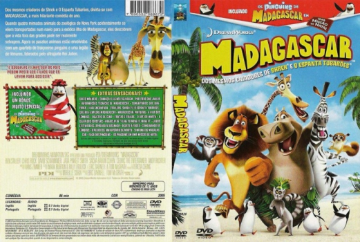

País:United States, 86 minutos
Idiomas falados:Inglês, Português
Gênero(s):Aventura, Animação, Comédia, Família
Diretor(s):Eric Darnell, Tom McGrath
Escritor(es):Mark Burton, Billy Frolick, Eric Darnell, Tom McGrath
Codec:MPEG-2 (DVD)
Número: 5802


Certificado:L
Sinopse:
O leão Alex é a grande atração do zoológico do Central Park, em Nova York. Ele e seus melhores amigos, a zebra Marty, a girafa Melman e a hipopótamo Gloria, sempre passaram a vida em cativeiro e desconhecem o que é morar na selva. Curioso em saber o que há por trás dos muros do zoo, Marty decide fugir e explorar o mundo. Ao perceberem, Alex, Gloria e Melman decidem partir à sua procura. O trio encontra Marty na estação Grand Central do metrô, mas antes que consigam voltar para casa são atingidos por dardos tranquilizantes e capturados. Embarcados em um navio rumo à África, eles acabam na ilha de Madagascar, onde precisam encontrar meios de sobrevivência em uma selva verdadeira.
Elenco:


Tipo de mídia: DVD5,
Legendas: Inglês, Português, Sem Legendas
Alugado: Não
Tela: Anamorphic Widescreen